Perícia Judicial
Como funciona a nomeação do perito judicial
Do cadastro no tribunal à proposta de honorários: o que o CPC prevê para os primeiros dias depois da nomeação.

Conhecimento, ferramentas e acompanhamento para quem leva a profissão a sério.
Biblioteca
Do cadastro no tribunal à proposta de honorários: o que o CPC prevê para os primeiros dias depois da nomeação.
O que muda de um tribunal para outro e o que é comum a todos.
Quem nomeia, quem contrata, a que cada um está sujeito.
Como estimar horas, justificar o valor e apresentar a proposta no prazo.
Quesitos bem formulados economizam esclarecimentos depois.
Contemporaneidade, quantidade, natureza e autenticidade dos padrões.